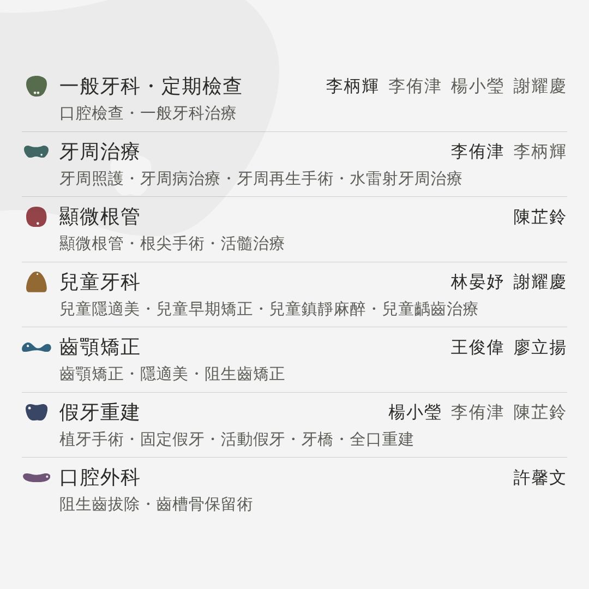
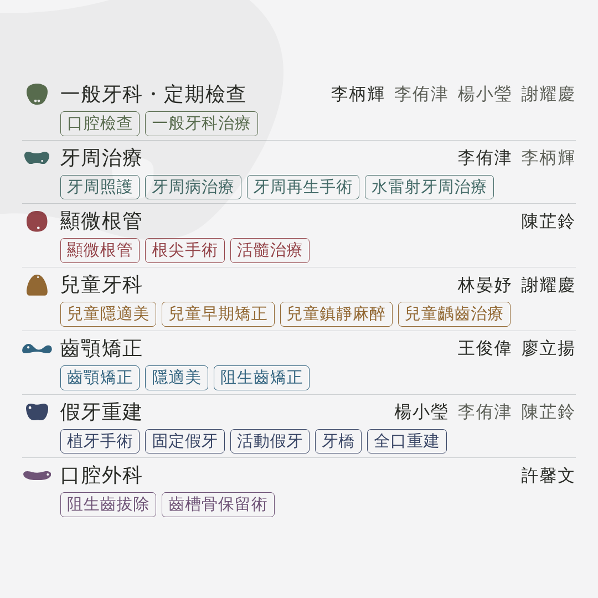
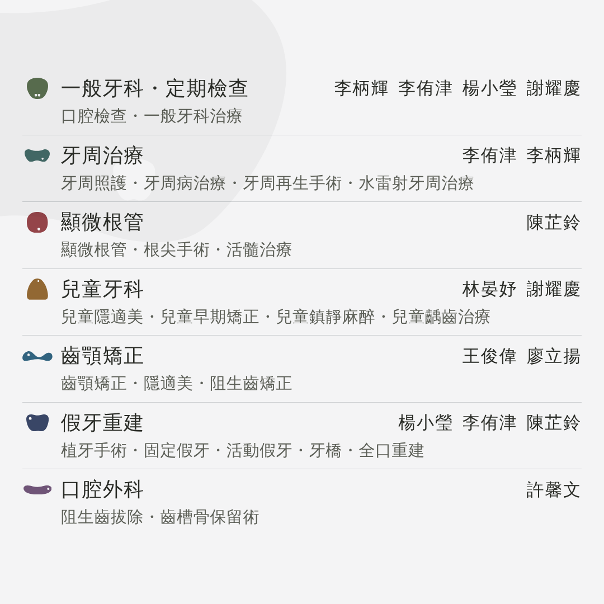
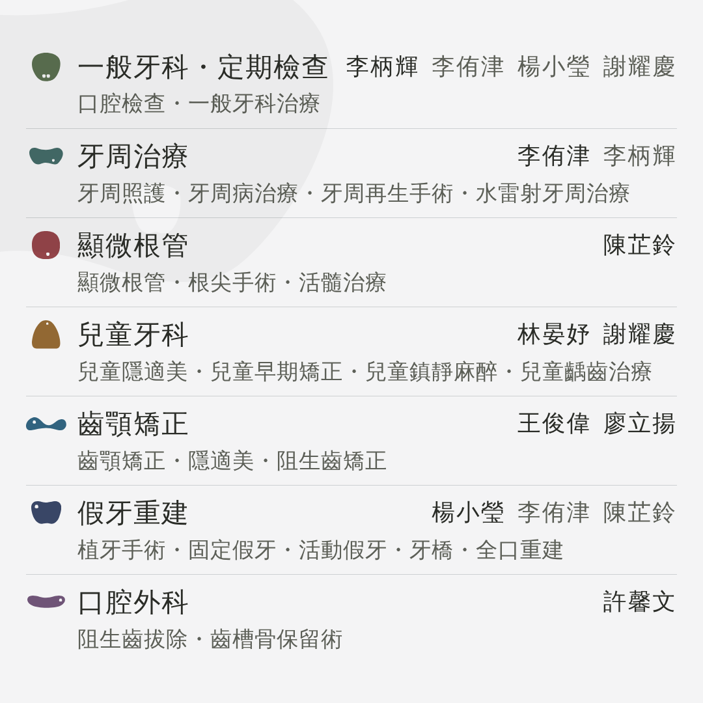
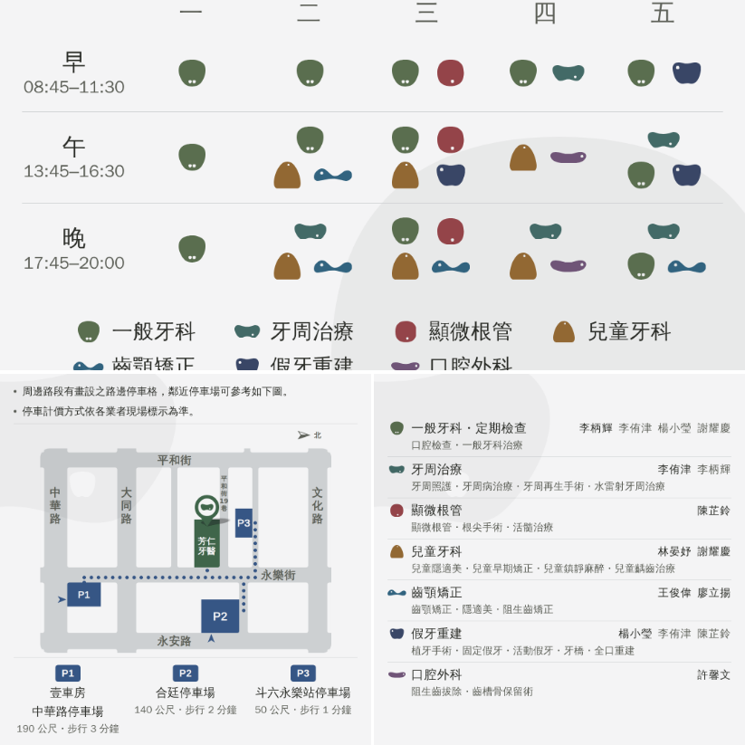

LINE 商家貼文的第三格標題、那兩個數字和網址都拿掉了
主頁「最新貼文」那三格的小格右。Ⓖ Ⓗ 已經拿掉。
⚠⚠ 你說「有些醫師專長是不同科的」——那不是漏寫，是兩邊的分法不一樣：
專長照專長自己的科分群、醫師卻照那張卡自己的科分，
所以牙周那一列印著李柄輝的「牙周照護」，名字卻只掛李侑津。
現在改成照站上篩選的同一條規則算（本科或專長命中）——
按下站上牙周那顆標記會亮誰，這張圖就印誰。
⚠⚠⚠ 這一輪再把標題、上下兩條線、「9 位醫師駐診・6 個部定專科」和 fangren.net
全部拿掉。空出一大塊，所以多一把倍率的尺，沒有自己放大。
⚠⚠ 判準是這一張六格在小格的實際大小（410px）並排

左上 Ⓔ 兩行 右上 Ⓕ 兩行・專長做成小塊
中左 Ⓔ2 中右 Ⓕ2（同上，只有醫師不分深淺）
左下 Ⓔ3 放大 1.08 倍 右下 Ⓔ4 放大 1.15 倍
下面每一個數字都是量這個尺寸得來的。
⚠⚠⚠ 這一輪真正改的：每一列印誰＝站上按那顆標記會亮起來的那幾位
| 這一列 | 本科的醫師 | 跨科（專長命中） |
|---|---|---|
| 一般牙科・定期檢查 | 李柄輝 | 李侑津 楊小瑩 謝耀慶 |
| 牙周治療 | 李侑津 | 李柄輝 |
| 顯微根管 | 陳芷鈴 | — |
| 兒童牙科 | 林晏妤 謝耀慶 | — |
| 齒顎矯正 | 王俊偉 廖立揚 | — |
| 假牙重建 | 楊小瑩 | 李侑津 陳芷鈴 |
| 口腔外科 | 許馨文 | — |
紅色那 6 個名字改動前一個都沒有出現。
舉例：李侑津的「植牙手術・固定假牙・活動假牙」本來就印在假牙重建那一列，
但那一列只掛楊小瑩；李柄輝的「牙周照護」印在牙周那一列，只掛李侑津。
⚠ 順序改成本科的排前面（站上一個人只出現在一張卡上，所以卡序從來不必回答
「誰排前面」；補進跨科的之後它才開始說話）。
Ⓔ 兩行建議這一格post-docs-two.png

第一行 科別＋醫師，第二行 專長，縮排對齊科別名的起點。 七列一行都沒折。跨科的那幾位用柔墨，一眼分得出「這一科的醫師」和 「也做這一科的醫師」。
Ⓕ 專長做成小塊同上，專長換成描邊小塊

和 Ⓔ 完全一樣，只有專長換成描邊小塊，顏色跟著該科走。 每一項各自成塊，掃起來比一整串點分隔清楚；代價是整張圖多了 28 條框線， 而且列距被小塊的高度逼得比 Ⓔ 緊 5px。
要不要分深淺跨科的那幾位：柔墨 vs 同一階

Ⓔ2 兩行・醫師不分深淺 全部同一階墨。分不出誰是這一科的，
但四位並排時份量一致、比較安靜。
Ⓕ2 小塊・醫師不分深淺 是同一件事套在 Ⓕ 上
（post-docs-twoc-flat.png）。
⚠ 柔墨那個做法是照抄站上的：按下某一科，非該科的專科藥丸就退成白底。
空出來的要不要用掉拿掉標題與頁尾之後，多一把倍率的尺

Ⓔ 現在這樣（科別 13.7px・醫師 11.8・專長 11.0）
Ⓔ3 放大 1.08 倍（14.8／12.7／11.9，post-docs-two-k108.png）
Ⓔ4 放大 1.15 倍（15.7／13.5／12.7，上面這一張）
⚠ 括號裡是在小格 410px 上的大小。這一線的地板是 10px，
而專長那一行現在是 11.0px、一直貼著地板；放到 1.15 才第一次離開 12px。
⚠⚠⚠ 擋住再放大的是「寬度」不是「高度」：拿掉標題空出來的是上下，
可是每一列的圖案、科別名、醫師名擠在同一行、都不折行 ——
最寬的那一列（一般牙科・定期檢查，四位醫師）要 863px、可用 1000px，
所以天花板是 1.159 倍，Ⓔ4 已經只剩 8px。
⚠ 放大是整組等比例（圖案、縮排、列距一起乘），不是只放大字。
Ⓕ 的天花板一模一樣（那一列的內容相同），所以這把尺挑到哪一案都適用。
在主頁上長怎樣大格＝看診時間 小格左＝停車 小格右＝Ⓔ

Ⓕ 的三格模擬在 profile-3up-twoc.png。
深淺與倍率那兩把尺沒有做三格 —— 縮到 410px 之後在那一張上看不太出來。
⚠ 三格擺在一起才看得出拿掉標題是對的：上面那格已經寫著芳仁牙醫的門診表，
這一格再寫一次診所名等於同一個名字在同一個畫面上出現兩次。
「詳情」那一欄要貼的字圖上的網址點不下去，這裡的可以
⚠⚠ 七條科別網址由這一欄接——圖上放不下七個入口，
但「詳情」放得下，而且點得下去。照這一份貼，不要重打。
⚠⚠⚠ 第一行「9 位醫師駐診・6 個部定專科」刻意留著：圖上不寫之後，
這張圖已經沒有一個地方講得出診所有多少人，而「詳情」正是接這種事的地方。
要不要一起拿掉，是你的決定——沒有自己動。
還沒問到、也還沒決定的
・「詳情」第一行那兩個數字要不要跟著拿掉（見上一節）。
・專長是全部印（最多的一科五項），不是挑過的；順序照站上。
・一般牙科那一列變成四位醫師（其中三位是跨科）—— 那是站上的事實， 但要不要在這一格上呈現得這麼滿，是你的決定。
・「假牙重建」這個縮寫沿用門診表那張（站上仍然是「植牙・假牙重建」）。
・浮水印照小格左那一張（同一顆、4%、壓左上），沒有另外問過。
・主頁那一格是裁切還是留白，後台按一次「預覽」就知道。
產生器 node drafts/channels/post-docs.mjs
守門 node drafts/channels/check-post-docs.mjs
推導在 drafts/channels/README.md 第三十六節。